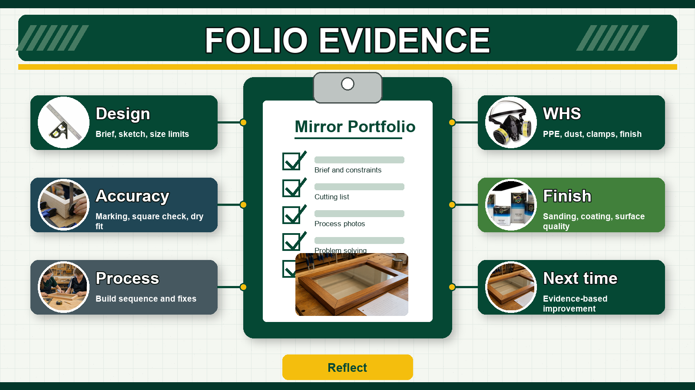
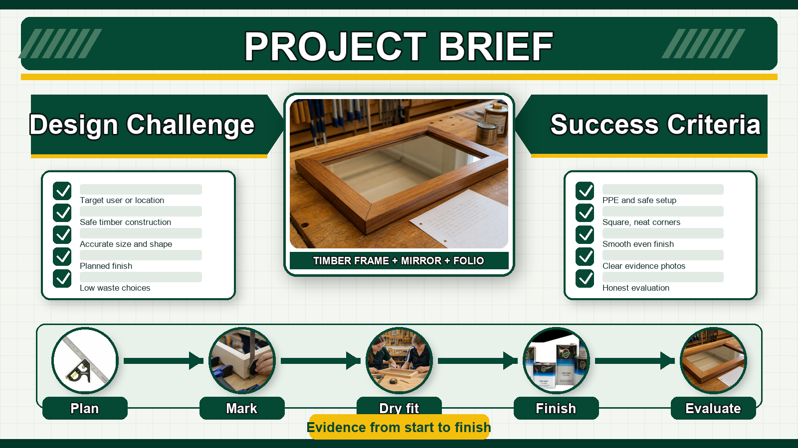
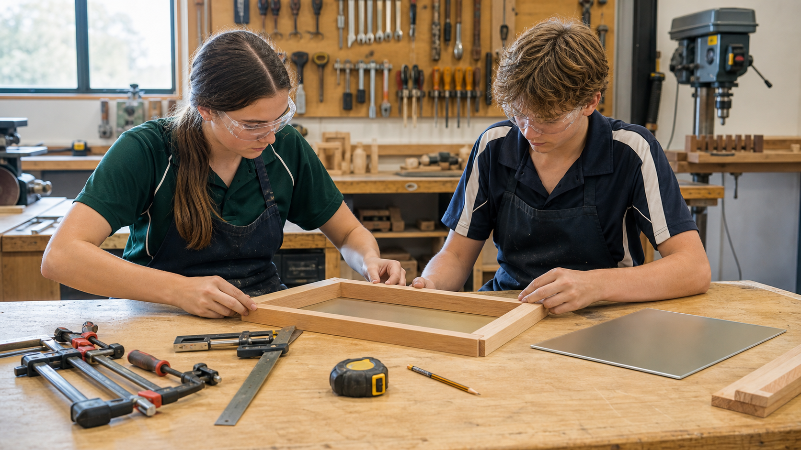
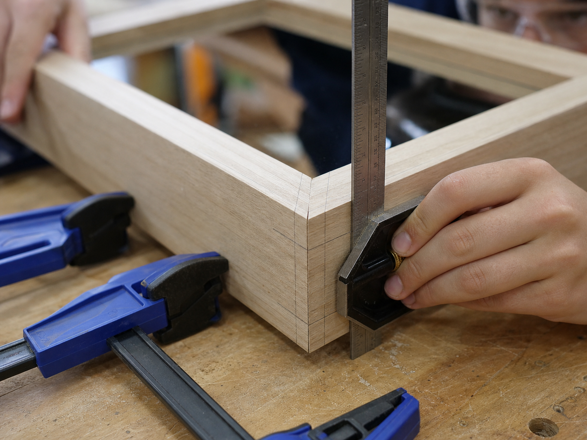
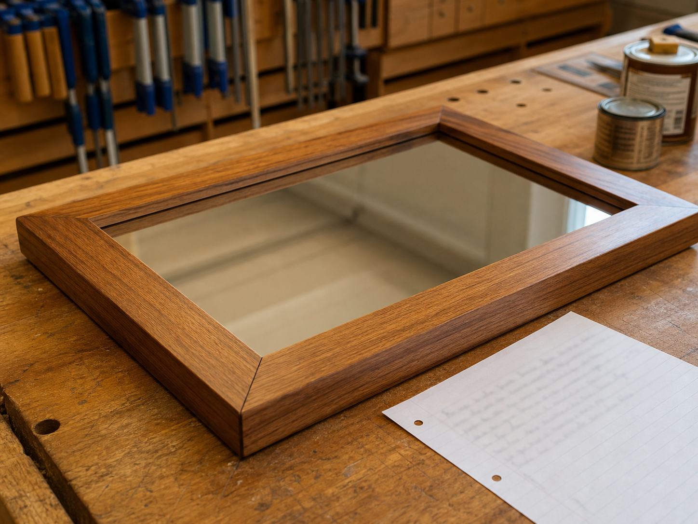

Write As You Build
Add short notes each lesson. Do not wait until the end and try to remember everything.
Student Workbook
Design brief, planning, evidence, process records, safety checks and final evaluation.
Student Workbook
Fill this in as the project develops. Your work saves automatically in this browser. Use export when you need a backup or want to submit the text through Classroom.
Add short notes each lesson. Do not wait until the end and try to remember everything.
Take photos of marking out, cutting, joinery, dry fit, glue-up, finishing and the final mirror.
Good portfolios explain problems and fixes. Perfect-sounding waffle is usually not evidence.
Folio Model
This follows the Engineering workbook style: each practical stage has a visual prompt, a clear evidence target and a short explanation of what the photo proves.

Section 1
Section 2
Explain what you are making, who it is for, and what limits you need to work within.
I am designing and making a timber mirror for a specific user or location. It must be safe, accurate, suitable for the space, finished neatly and completed within the class time and workshop limits.

Section 3
Record what your mirror should look like and explain why you chose that design.
Section 4
List the materials and the main parts before cutting. Check sizes with your teacher before using machines.
| Part | Material | Length | Width | Qty |
|---|---|---|---|---|
Section 5
Keep this short and honest. What did you do, what evidence did you collect, and what needs fixing?
Section 6
Tick each photo or sketch once you have added it to your portfolio or saved it for submission.


Section 7
Strong portfolios explain what went wrong, what was changed, and what was learned.
Section 8
Use this section to show that safety was part of the build, not something added afterwards.

Section 9
Evaluate the finished mirror against the brief, accuracy, finish quality, safe construction and what you would improve.